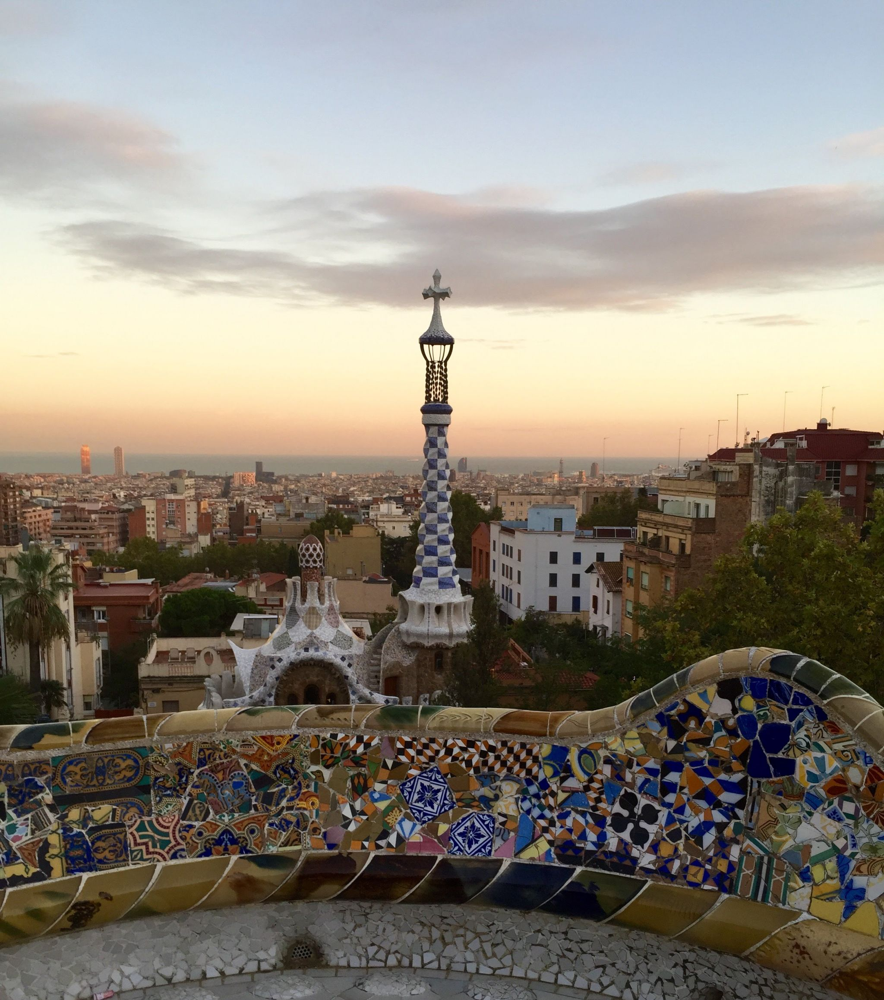
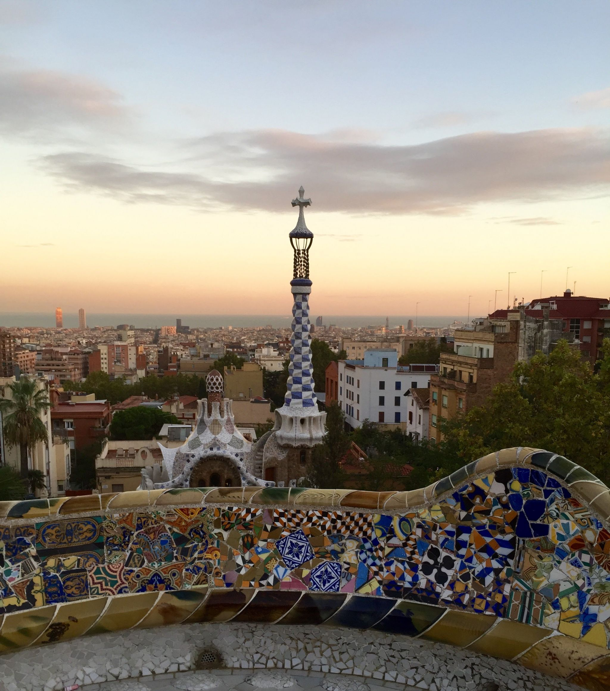

Wat moet je zeker zien en doen als je Barcelona bezoekt? Hieronder een paar van de mooiste en leukste plekken die ik heb bezocht.
Sagrada Família

Wat is de Sagrada Família?
De Sagrada Família is een van de meest beroemde kerken ter wereld en een must voor iedereen die Barcelona bezoekt.
De bouw van deze modernistische, monumentale kerk begon in 1882, maar Antoni Gaudí's meesterwerk is nog altijd niet af.
Religieuze Betekenis
Het is een katholieke kerk en heeft religieuze betekenis. De naam Sagrada Família betekent "Heilige Familie" in het Catalaans.


Wat kun je doen bij de Sagrada Família?
Je kunt een toegangskaartje kopen en de Sagrada Família van binnen bekijken en meer te weten te komen over de geschiedenis en archictectuur.
Het interieur is net zo indrukwekkend als de buitenkant!
Tip: Koop je tickets ruim van te voren, anders kom je er niet in. Het was mij helaas ook niet gelukt
Sagrada Familia Museum
Onder de basiliek, in de kelder, bevindt zich het Sagrada Família Museum. Hier leer je aan de hand van oude beelden en documenten alles over de geschiedenis, de voortgang en de ideeën van Gaudí
Park Güell
Park Güell met de bekende, kleurrijke mozaïeken is ook één van de highlights van architect Antoni Gaudí.
Het park werd aangelegd in opdracht van de ondernemer Eusebi Güell. Ruim honderd jaar later is het één van Barcelona's grootste toeristische bezienswaardigheden.
 
